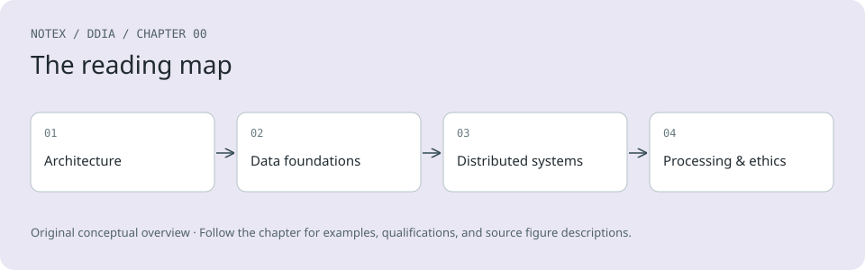

Chapter 0. Preface
There are hundreds of databases to choose from. Which one should you use for your application? The short answer is, “It depends.” The long answer is…this book.
Different technologies for storing and processing data make different trade-offs, and no one approach is best for all situations. The system that is a perfect fit for one application is badly suited to another. This book is a guide to the entire landscape of data systems, not just looking at one product, but comparing the strengths and weaknesses of many systems.
Although the landscape of technologies for processing and storing data is diverse and fast-changing, the underlying principles endure. If you understand those principles, you’re in a position to see where each tool fits in, how to make good use of it, and how to avoid its pitfalls. This book focuses on those principles.
While this book is not a tutorial for using one particular tool, it isn’t a textbook full of dry theory either. Instead, we will look at many examples of successful data systems: technologies that form the foundation of numerous popular applications and that have to meet scalability, performance, and reliability requirements in production every day. We will dig into the internals of those systems, tease apart their key algorithms, and discuss the trade-offs they have made. On this journey, we will try to find useful ways of thinking about data systems—not just how they work, but also why they work that way.
After reading this book, you will be in a great position to determine which kinds of technologies are appropriate for which purposes and to understand how tools can be combined to form the foundation of a solid application architecture. You will develop a strong intuition for what your systems are doing under the hood so that you can reason about their behavior, make good design decisions, and track down any problems that may arise.
The guiding philosophy of this book is to bring together a broad range of perspectives: both theoretical and practical, both recent and old. The computing industry tends to be attracted to things that are new and shiny and to look down on ideas that are considered old or academic. That is a mistake; many powerful, foundational ideas in computing arose from research, some recent, some decades ago. On the other hand, academia sometimes lacks a clear idea of what issues are important in practice. This book combines the best of both: academic precision and attention to detail with an industrial focus on practicality.
Who Should Read This Book?
If any of the following are true for you, you’ll find this book valuable:
-
You’re a software engineer, software architect, or technical manager who needs to make decisions about the architecture of the systems you work on—for example, you need to choose tools for solving a given problem and figure out how best to apply them. This applies especially to backend systems.
-
You’re a data engineer who wants to understand the wider context of the systems you deal with, or a cloud engineer who wants insights into the underpinnings of the systems you’re using. You will find that even though modern distributed systems hide a lot of complexity from you, understanding their underlying principles is extremely useful for performance optimization and debugging.
-
You want to learn how to make data systems scalable (e.g., to support apps with millions of users), highly available (minimizing downtime), operationally robust, and easier to maintain in the long run (even as they grow and as requirements and technologies change).
-
You are preparing for a “system design” job interview in which you will be asked to sketch an architecture for an application, and you need to learn the principles for good data architectures.
-
You are curious to find out what goes on behind the scenes at major websites and online services, and inside various databases and data processing systems—especially if you like to dig deeper than buzzwords to gain a technically accurate and precise understanding of various technologies and their trade-offs.
This book assumes that you already have some experience building web-based applications and that you are familiar with relational databases and SQL. A high-level understanding of common network protocols like TCP and HTTP is helpful. Your choice of programming language or framework makes no difference for this book.
What’s New in the Second Edition?
This second edition has the same goals and scope as the first edition of Designing Data-Intensive Applications, which was published in 2017. However, we have thoroughly revised the entire book to reflect technological changes that have happened in the last decade and to improve the clarity of the explanations.
The biggest technical changes that have affected this book since the first edition are the explosion of interest in AI and the rise of cloud native data systems architectures. While this book is not about AI per se, we have added coverage of data systems that support AI and machine learning, including vector indexes (used for semantic search), DataFrames (used for training datasets), and batch processing systems for preparing large amounts of training data. Cloud native ideas, such as building data systems on top of object stores instead of local disks, have been woven in throughout the book.
We have also added discussions of sync engines and local-first software, workflow engines and durable execution, formal methods and randomized testing, GraphQL, and various other technologies that are worth knowing about. We have included a bit of legal context as well, by exploring the impact of the EU General Data Protection Regulation (GDPR) and related law. We’ve also taken a few things away—for example, as MapReduce is now largely obsolete, we have rewritten the batch processing chapter accordingly, and we sadly decided to drop the Tolkien-style maps.
A few discussions have been restructured, and the chapter numbering has changed. Some chapters required only a light edit, while others (such as Chapter 10, on consistency and consensus) were almost completely rewritten to make them clearer. Overall, the second edition is about 60 pages longer than the first.
References and Further Reading
Most of what we discuss in this book has already been said elsewhere in some form or another—in conference presentations, research papers, blog posts, code, bug trackers, mailing lists, or engineering folklore. This book summarizes the most important ideas from many sources, and it includes pointers to the original literature throughout the text. The references at the end of each chapter are great resources if you want to explore an area in more depth, and most of them are freely available online.
In the ebook editions we have included links to the full text of online resources. As links tend to break frequently because of the nature of the web, we have also included archival links where possible. If you come across a broken link, or if you are reading a print copy of this book, you can use a search engine to look up references. For academic papers, search for the title in Google Scholar to find open-access (free) PDF files. Books might cost money, but you shouldn’t have to pay for research papers.
Alternatively, you can find all the references at https://github.com/ept/ddia2-references, where we maintain up-to-date links.
Conventions Used in This Book
The following typographical conventions are used in this book:
Italic
Indicates new terms, URLs, email addresses, filenames, and file extensions.
Constant width
Used for program listings, as well as within paragraphs to refer to program elements such as variable or function names, databases, datatypes, environment variables, statements, and keywords.
Constant width bold
Shows commands or other text that should be typed literally by the user.
Constant width italic
Shows text that should be replaced with user-supplied values or by values determined by context.
Note
This element signifies a general note.
Warning
This element indicates a warning or caution.
O’Reilly Online Learning
Note
For more than 40 years, O’Reilly Media has provided technology and business training, knowledge, and insight to help companies succeed.
Our unique network of experts and innovators share their knowledge and expertise through books, articles, and our online learning platform. O’Reilly’s online learning platform gives you on-demand access to live training courses, in-depth learning paths, interactive coding environments, and a vast collection of text and video from O’Reilly and 200+ other publishers. For more information, visit https://oreilly.com.
How to Contact Us
Please address comments and questions concerning this book to the publisher:
O’Reilly Media, Inc.
141 Stony Circle, Suite 195
Santa Rosa, CA 95401
800-889-8969 (in the United States or Canada)
707-827-7019 (international or local)
707-829-0104 (fax)
support@oreilly.com
https://oreilly.com/about/contact.html
We have a web page for this book, where we list errata, examples, and any additional information. You can access this page at https://oreil.ly/DesigningDataIntensiveApps2.
For news and information about our books and courses, visit https://oreilly.com.
Find us on LinkedIn: https://linkedin.com/company/oreilly.
Watch us on YouTube: https://youtube.com/oreillymedia.
Acknowledgments
This book collects and systematizes knowledge and ideas from a huge number of people. It contains about a thousand references to articles, blog posts, talks, documentation, and more, and we are very grateful to the authors of this material for sharing their knowledge.
For the second edition, Chris Riccomini joined Martin Kleppmann as coauthor. We would like to thank everyone who provided feedback and input that improved the book: in particular, David Booth, Mark Callaghan, Chuck Carman, Aniruddh Chaturvedi, William Dealtry, Arbel Deutsch Peled, Phil Eaton, Joy Gao, Johannes Hauser, Matthew Hertz, Erin R. Hoffman, Matt Housley, Karan Johar, Ling Mao, Pedram Navid, Mohit Palriwal, Alex Petrov, Alex Power, Joe Reis, Jack Vanlightly, Will Wilson, Jacky Zhao, and Zhengliang Zhu. Of course, we take all responsibility for any remaining errors or unpalatable opinions in this book.
While he was writing the first edition, Martin Kleppmann benefited from a large number of people who took the time to discuss ideas or patiently explain things to him. He would like to thank Joe Adler, Ross Anderson, Peter Bailis, Márton Balassi, Alastair Beresford, Mark Callaghan, Mat Clayton, Patrick Collison, Sean Cribbs, Shirshanka Das, Niklas Ekström, Stephan Ewen, Alan Fekete, Gyula Fóra, Camille Fournier, Andres Freund, John Garbutt, Seth Gilbert, Tom Haggett, Pat Helland, Joe Hellerstein, Jakob Homan, Heidi Howard, John Hugg, Julian Hyde, Conrad Irwin, Evan Jones, Flavio Junqueira, Jessica Kerr, Kyle Kingsbury, Jay Kreps, Carl Lerche, Nicolas Liochon, Steve Loughran, Lee Mallabone, Nathan Marz, Caitie McCaffrey, Josie McLellan, Christopher Meiklejohn, Ian Meyers, Neha Narkhede, Neha Narula, Cathy O’Neil, Onora O’Neill, Ludovic Orban, Zoran Perkov, Julia Powles, Chris Riccomini, Henry Robinson, David Rosenthal, Jennifer Rullmann, Matthew Sackman, Martin Scholl, Amit Sela, Gwen Shapira, Greg Spurrier, Sam Stokes, Ben Stopford, Tom Stuart, Diana Vasile, Rahul Vohra, Pete Warden, and Brett Wooldridge.
Several more people provided valuable feedback on drafts of the first edition: in particular, Raul Agepati, Tyler Akidau, Mattias Andersson, Sasha Baranov, Veena Basavaraj, David Beyer, Jim Brikman, Paul Carey, Raul Castro Fernandez, Joseph Chow, Derek Elkins, Sam Elliott, Alexander Gallego, Mark Grover, Stu Halloway, Heidi Howard, Nicola Kleppmann, Stefan Kruppa, Bjorn Madsen, Sander Mak, Stefan Podkowinski, Phil Potter, Hamid Ramazani, Sam Stokes, and Ben Summers.
Martin Kleppmann is also grateful for financial support he received during the writing of this book. While working on the first edition, he was given paid time to work on the book by LinkedIn, and later he was supported by a grant from The Boeing Company. During the writing of the second edition he was supported by a Freigeist Fellowship from the Volkswagen Foundation, by crowdfunding supporters including Ably, Mintter, Prisma, and SoftwareMill, and by sponsorship from ScyllaDB.
We would like to thank the team at O’Reilly for helping make this book real, and our colleagues and families for tolerating the vast amounts of time we have sunk into writing. We hope you find that it was worthwhile.
- table of contents
- search
- settings
- Previous chapter
- Designing Data-Intensive Applications, 2nd Edition
- Next chapter
-
- Trade-Offs in Data Systems Architecture
- Table of contents collapsed